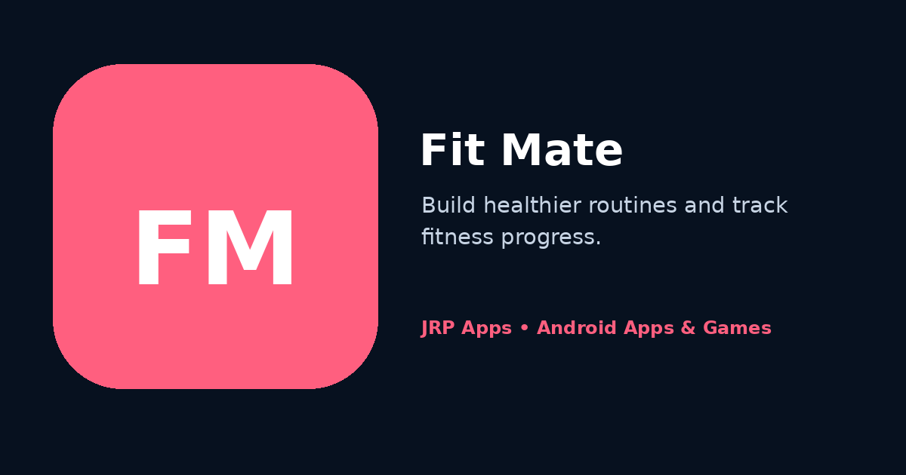

A practical fitness companion for recording progress, organising routines and keeping everyday activity goals visible without an overloaded experience.
Fit Mate is created for people who want a simple record of fitness activity and progress without turning every routine into a complex data project. The app addresses a common problem: goals are easy to set but difficult to follow when workouts, measurements or routine notes are scattered across memory, paper and unrelated apps. Fit Mate brings that information into one focused Android experience.
The purpose is to support consistency. Users can return regularly, update relevant information and review clear summaries instead of rebuilding their progress from memory. A direct workflow reduces friction, while goal-oriented organisation helps users connect individual entries with a longer-term routine. The experience is intended to be encouraging and understandable rather than competitive or socially demanding.
Fit Mate complements other practical JRP tools. Users working on broader personal organisation can track spending in Money Mate, and quick numeric checks can be completed in Calculator Pro. Each app remains focused so fitness information does not become mixed with unrelated tasks.
Features and Why They Matter
Fitness progress tracking. Regular entries create a record that is easier to review than relying on memory alone. Tracking can help users notice consistency, recognise gradual improvement and understand when a routine has been interrupted.
Routine and activity organisation. A structured place for recurring activities helps turn broad intentions into repeatable actions. Organisation matters because users are more likely to follow a routine when the next step is clear and previous work is easy to reference.
Clear summaries. Readable summaries reduce the effort needed to understand recorded information. Instead of searching through isolated entries, users can focus on the progress and patterns that support their personal goals.
Goal-oriented daily experience. The interface keeps attention on practical actions rather than overwhelming users with advanced sports analytics. This makes it suitable for everyday fitness habits, gradual improvement and people returning after a break.
Responsive phone layouts. Screens are designed for comfortable use on supported Android phones, with readable text and accessible controls. Responsive behaviour helps forms and summaries remain usable across different screen sizes.
Focused Material Design interface. Consistent components and restrained visual effects make repeated updates easier. A familiar design reduces learning time and allows users to spend more attention on their routine than on navigating the app.
Who Should Use It
Fit Mate can support beginners establishing a walking or exercise routine, regular gym users recording progress, people returning to activity after a pause, and anyone who prefers private self-tracking over public challenges. A beginner might use it to build consistency, while an experienced user may value having a simple personal record that is quick to update.
The app is a general fitness companion and does not replace medical advice, diagnosis or professional coaching. Users with health concerns, injuries or medical conditions should follow guidance from qualified professionals and use the app only as an organisational aid.
Privacy-First Data Handling
Fitness information can be personal, so the core experience is designed around user-controlled records rather than public sharing. Ordinary use does not need a social profile, and users can focus on their own routine without exposing progress to a community feed.
Fit Mate aims to avoid permissions that are unnecessary for its stated tracking features. Core local records are intended to remain useful offline, while installation, updates, support, advertising or optional connected functions may require internet access. Product-specific information is available in the Fit Mate privacy policy.
JRP Apps applies a privacy-first philosophy by limiting collection to what is reasonably needed for operation, security, support or optional services and by providing clear contact details for questions.
Fast, Lightweight Android Performance
Because fitness updates may happen before or after an activity, Fit Mate is designed to open quickly and keep entry screens responsive. Lightweight local workflows reduce waiting, while efficient navigation helps users update progress without losing focus or spending excessive time inside the app.
The responsive Material Design interface uses clear hierarchy, accessible touch targets and layouts that adapt to supported phones. Restrained animation and limited unnecessary background work support battery-friendly behaviour. Android 11 and later is the stated baseline, and updates focus on stability, compatibility and smooth recurring use.
Offline Use and Regular Updates
Core local tracking and review are intended to remain useful without a continuous internet connection. Network access may still be needed for Google Play installation and updates, support links, advertising or optional connected services. The latest available release should be used for current compatibility and reliability improvements.
App Preview

Promotional preview for Fit Mate, highlighting a focused Android experience for fitness routines and personal progress tracking.
Frequently Asked Questions
What is Fit Mate designed to do?
Fit Mate helps users record fitness progress, organise routines and keep everyday activity goals visible through a focused Android experience.
Is Fit Mate suitable for beginners?
Yes. Its direct workflow is intended to be approachable for people beginning a routine as well as users who already track regular activity.
Does Fit Mate provide medical advice?
No. Fit Mate is an organisational fitness companion and does not replace medical advice, diagnosis, treatment or professional coaching.
Can Fit Mate be used offline?
Core local tracking is intended to remain useful offline. Installation, updates, support, advertising or optional online services may still require connectivity.
Do I need to share my progress publicly?
No. The ordinary experience is designed around private, user-controlled tracking rather than a required public profile or social feed.
How does Fit Mate approach permissions?
The app aims to avoid permissions that are not necessary for its stated functions. Any permission requested should support an identified feature.
What Android version is required?
The website lists Android 11 or later as the supported requirement, subject to device compatibility information shown by Google Play.
How can I ask a privacy or support question?
Email support@jrphub.com with the app name and relevant details. Avoid including unnecessary health or other sensitive personal information.
Related Apps and Games
For another personal routine, use Money Mate to build consistent expense tracking. Calculator Pro handles quick numerical work, and Arrow Escape offers a short logic-focused break.
Money MateA personal tracker for income, expenses and spending patterns.
Benefit: build a clearer record of everyday money activity.